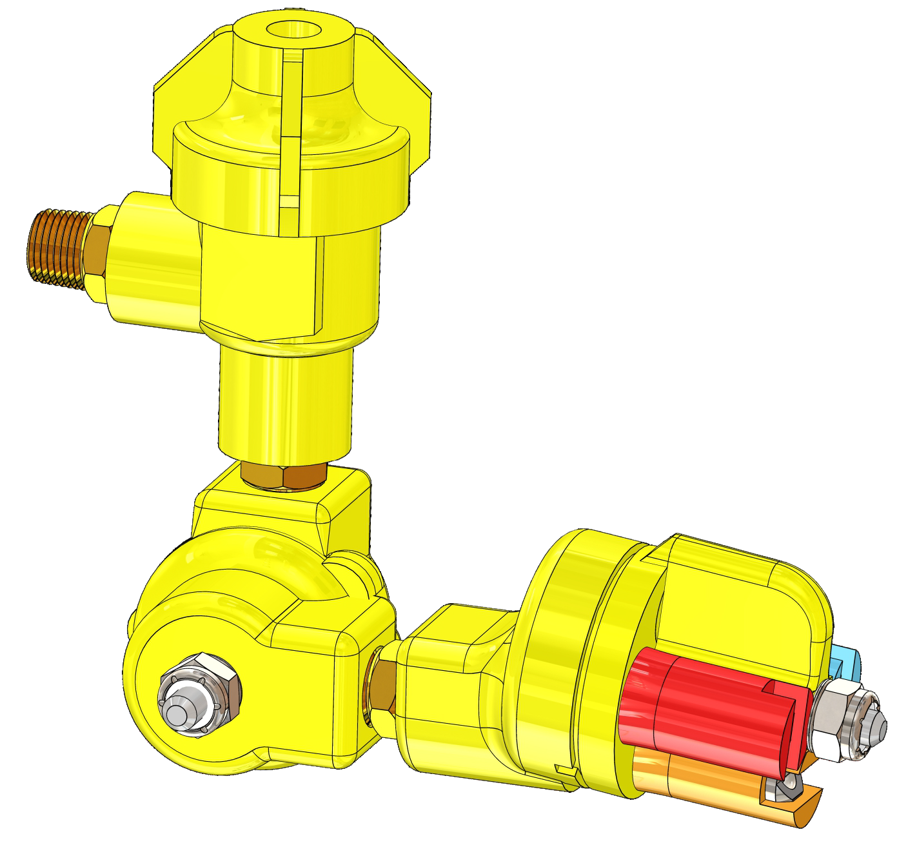
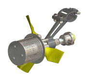

Calibração bicos hidráulicos

Recomendacoes e calibracao para bicos hidraulicos.
ACESSAR CALCULADORA
Calibracao atomizadores rotativos

Recomendacoes e calibracao para atomizadores rotativos.
ACESSAR CALCULADORA
O que o seu bico pode fazer
Faixas de taxa e ajustes possiveis com o equipamento selecionado.
ACESSAR CALCULADORA